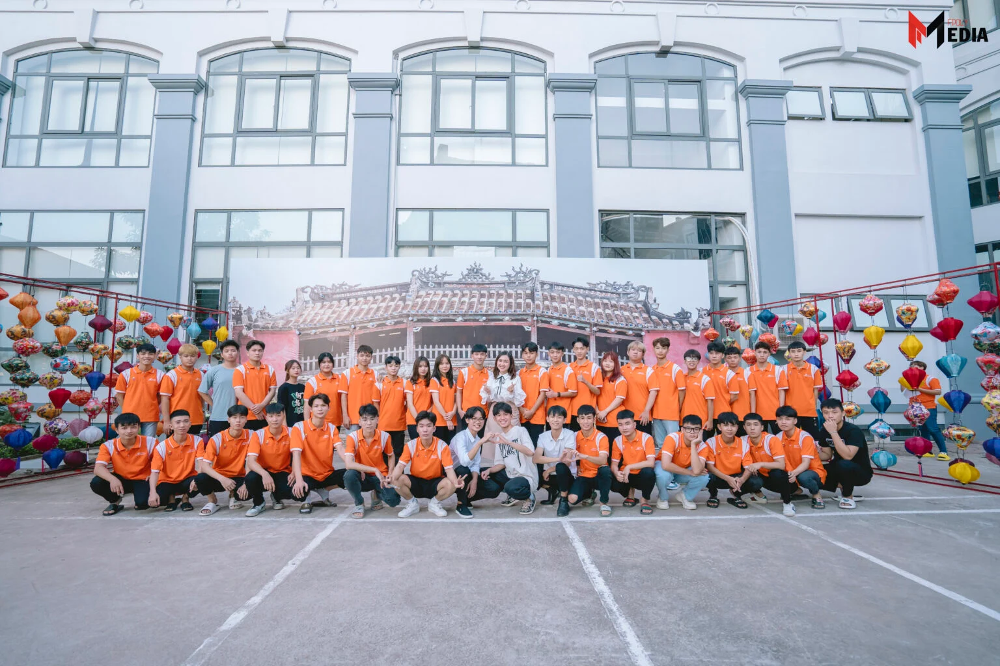

“Little Hoi An” – Điểm “sống ảo” mới cực “hot” của sinh viên FPoly Hà Nội
Đến với Cao đẳng FPT Polytechnic Hà Nội, các bạn sinh viên sẽ có cơ hội được chụp ảnh “sống ảo” tại khu check-in “xịn xò” mang tên “Little Hoi An”.
Nằm ngay tại sân cầu lông của trường Cao đẳng FPT Polytechnic Hà Nội, “Little Hoi An” với hơn 400 chiếc đèn lồng đã tái hiện lại hình ảnh như một khu phố của Hội An, Đà Nẵng, thu hút rất nhiều bạn sinh viên tới tham gia “check-in”. Dù là ban ngày hay buổi tối, nơi đây cũng là địa điểm hoàn hảo để các bạn trẻ cho “ra lò” những bộ ảnh độc đáo, ấn tượng và được các những tín đồ “sống ảo” ưu ái đặt tên “Khu Check-in xịn xò nhất trường F”.
Sau 6h, chính là lúc mà “Hội An thu nhỏ” đẹp rực rỡ và cuốn hút nhất bởi ánh sáng vàng rực rỡ cả một góc sân trường. Bạn Hoài Linh, sinh viên K18.3 háo hức chia sẻ: “Mình là tân sinh viên nhập học tháng 8. Từ những ngày đầu đến trường, mình đã vô cùng ấn tượng vì trường quá đẹp. Nhưng thật không ngờ, trường lại còn đầu tư cho sinh viên vui chơi trung thu với cả một khu vực “xịn xò” như thế này. Đúng là xứng đáng với cái tên ngôi trường “chiều” sinh viên nhất.”

Tại “Little Hoi An”, các bạn sinh viên hoàn toàn có thể “sống ảo” với những bức ảnh ấn tượng ở bất kì góc chụp nào. Các bạn sinh viên có thể chụp tại chính giữa với hình ảnh “Chùa Cầu Hội An – Linh hồn của phố Hội” hoặc đi sang 2 bên để chụp ảnh với hơn 400 chiếc đèn lồng lung linh.
Hãy cùng ngắm nhìn một số hình ảnh của các bạn sinh viên và CLB Media đã chụp ảnh tại khu vực “Little Hoi An” nhé!
“Dù ai đi ngược về xuôi – Little Hoi An vẫn tuyệt phải không cả nhà”? Trong thời gian sắp tới, mong rằng, sẽ không chỉ có “Little Hoi An”, mà sẽ có thật nhiều khu “sống ảo” “xịn xò” nữa dành tặng các bạn sinh viên FPT Polytechnic Hà Nội! Hãy cùng đón chờ những món quà đặc biệt này nhé!